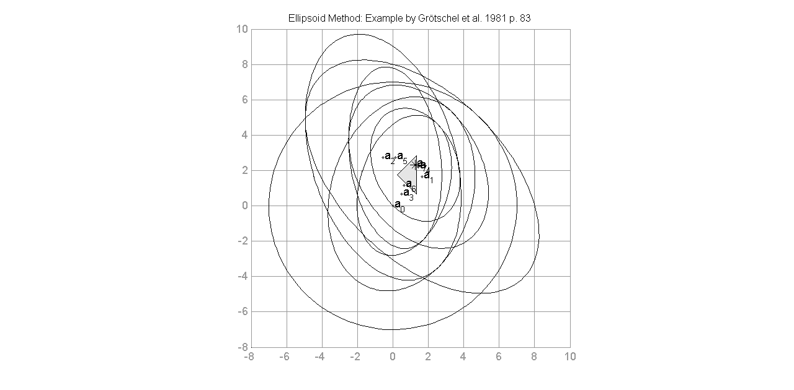

Ellipsoid Method Example Plots
This file contains various examples of the ellipsoid method.
% Input: m-by-n matrix by Grötschel et al. 1981 p. 83 (failure in book in inequality (2): x2 -> x1 !) C = [-1 -1;3 0;-2 2]; d = [-2;4;3]; o = [1 2]; % Title title = 'Ellipsoid Method: Example by Grötschel et al. 1981 p. 83'; % Exact same picture from book [a,iter] = ellipsoid_method(C,d,'radius',7,'numiter',8,'plot_fig',1,'plot_iter',[0:7],'plot_title',title,'plot_separating',0,'plot_gradient',0,'ignore_blowup',1); % Picture from book with optimization and hyperplane plot %[a,iter] = ellipsoid_method(C,d,o,'central','optimize',1,'radius',7,'plot_fig',1,'plot_iter',[0:3],'plot_title',title,'ignore_blowup',1); % Example for shallow cut %[a,iter] = ellipsoid_method(C,d,o,'shallow','optimize',1,'radius',7,'plot_fig',1,'plot_iter',[0 1 2 3 4],'plot_title',title); % Example for deep cut %[a,iter] = ellipsoid_method(C,d,o,'deep','optimize',1,'radius',7,'plot_fig',1,'plot_iter',[0 1 2 3 4],'plot_title',title); % Pause after each iteration %[a,iter] = ellipsoid_method(C,d,o,'central','optimize',1,'radius',7,'numiter',100,'plot_fig',1,'plot_iter',[0:7],'plot_title',title,'plot_pause',1,'ignore_blowup',1,'eps',0.001); % No plotting %[a,iter] = ellipsoid_method(C,d,o,'central','radius',7,'ignore_blowup',1); % Plots for thesis %[a,iter] = ellipsoid_method(C,d,o,'central','optimize',0,'radius',7,'numiter',100,'plot_fig',1,'plot_iter',[0:5],'plot_pause',1,'ignore_blowup',1,'plot_separating',1,'plot_gradient',1); % Narrow polytope test % C = [1 0;0 1;-1 0;0 -1]; % d = [0.5;9;-9;-0.1]; % o = [1 2]; % [a,iter] = ellipsoid_method(C,d,o,'shallow','optimize',1,'radius',100000,'plot_fig',1,'plot_iter',[0:10],'eps',0.001); % Gurobi Matlab LP example (lp.m) plus non-negativity constraints % Optimal point: [1 0 1] with obj value 4 % C = [1 1 0;0 1 1;-1 0 0;0 -1 0;0 0 -1]; % d = [1;1;0;0;0]; % o = [1 2 3]; % [a,iter] = ellipsoid_method(C,d,o,'central','optimize',1,'eps',0.001,'radius',20); % Gurobi Matlab LP example (lp2.m) as maximization plus non-negativity constraints % Optimal point: [0.5909 1.1364 0] with obj value 2.8636 % C = [-1 -3 -4;-8 -2 -3;-1 0 0;0 -1 0;0 0 -1]; % d = [-4;-7;0;0;0]; % o = [-1 -2 -3]; % [a,iter] = ellipsoid_method(C,d,o,'central','optimize',1,'eps',0.001,'radius',50); % Output solution format longG fprintf('Best feasible point after iteration %i:\n', iter) disp(a) fprintf('Objective Value: %d\n', o*a)
First feasible solution found in iteration 7!
Best feasible point after iteration 8:
1.26612692121257
2.32172414907928
Objective Value: 5.909575e+00
